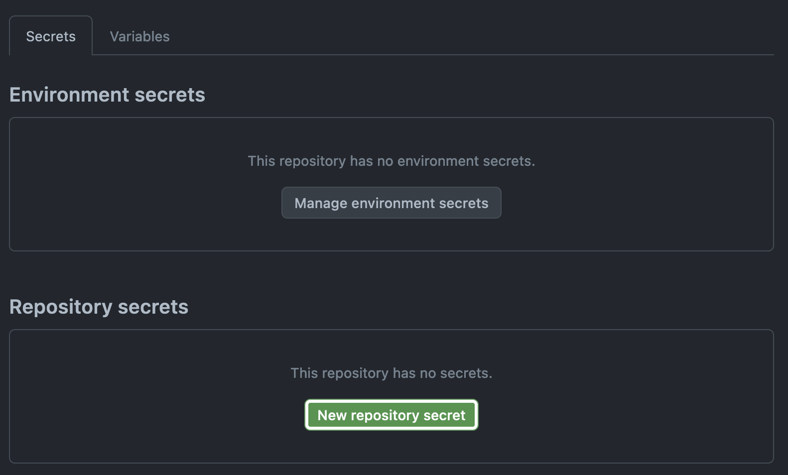

Continious Deployment for
TPT Webhosting
Are you tired of uploading your homework again and again to terrible CPanel file manager? Do you want stop this hassle and automate it? Then this guide is for you!
At the end of this guide you'll learn how to connect to the TPT Webhosting server with SSH, clone your repository to the server and automatically pull repository with each git push.
1. Generate new SSH keys
If you already have SSH keys, you can use them and skip this step.
Also checkout
this github page
about creating SSH keys.
Enter this command to your terminal and change mart.mets@tptlive.ee to your email
or just write anything you want.
-t is type of ssh key (ed25519 is recommended)
-C sets a comment to public key.
You can just copy-paste code below if you don't care.
$ ssh-keygen -t ed25519 -C "mart.mets@tptlive.ee"Just press enter three times and now you have
your SSH private key at ~/.ssh/id_ed25519 and public key at ~/.ssh/id_ed25519.pub.
2. Install SSH key to webhosting server
Next thing, is to just open ~/.ssh/id_ed25519.pub file. You can open it manually, or with a command below.
$ type ~/.ssh/id_ed25519.pub # for windows
$ cat ~/.ssh/id_ed25519.pub # for linux/macos And copy the output that should look like this:
ssh-ed25519 AAAA... mart.mets@tptlive.eeThen go to webhosting.tptlive.ee and login.
And click the button "Log in to cPanel".
Scroll down until "Security" category, and open "SSH Access".
Click on "Manage SSH Keys".
And then "Import Key".
Paste your public SSH key that you have copied before and paste it into folowing text box. And press "Import"!

But we are not done yet! We still need to activate our public key.
Click on "Manage" button.
And then click on "Authorize".
And you now we are done with our SSH keys. 🎉
But not for too long...
3. Setting up a Github repository
First lets create a new public repository on Github.
Write as name your-group-site.
For example I have chose ta22v-site.
You can choose any name you want.
And for easier setup, I recommend to make it public.
And create your brand new repository!
Clone your repository to your computer, add some files like index.html to the repository,
or you can even move all of your works to your repository! And do not forget to push your changes.
4. Clone the repository to TPT Webhosting
First, we need to login with ssh to our server. Use command below to connect to the server.ssh [username] @[your domain] .webhosting.tptlive.ee -p 1157For example, this is command with my username and domain:
ssh rhvoemhx@retr0.webhosting.tptlive.ee -p 1157You can find your username and domain in cPanel at the right side under "General Information"
For me my username is rhvoemhx and
my domain is retr0.webhosting.tptlive.ee
After successfully connecting to server, you need to clone your repository
to public_html/ folder,
for example public_html/github.
$ git clone https://github.com/your_repository public_html/githubAfter cloning your repository you can check if you have your files with ls -la
5. Making Continious Deployment
We will use Github Actions to create a script that on every push to repository will pull repository on the server. All you'll need to do is to create a new file in your repository, and push changes.
Create a new file .github/workflows/deploy.yml in your repository.
on:
push:
branches:
- main
workflow_dispatch:
jobs:
deploy:
runs-on: ubuntu-latest
steps:
- name: Install SSH keys
# check this thread to understand why its needed:
# https://stackoverflow.com/a/70447517
run: |
install -m 600 -D /dev/null ~/.ssh/id_rsa
echo "${{ secrets.SSH_PRIVATE_KEY }}" > ~/.ssh/id_rsa
ssh-keyscan -p ${{ secrets.SSH_PORT }} ${{ secrets.SSH_HOST }} > ~/.ssh/known_hosts
- name: connect and pull
run: ssh ${{ secrets.SSH_USER }}@${{ secrets.SSH_HOST }} -p ${{ secrets.SSH_PORT }} \
"cd ${{ vars.WORK_DIR }} && git checkout main && git pull && exit"
- name: Cleanup SSH keys
run: rm -rf ~/.sshOr download deploy.yml from here.
Also maybe you'll need to change main to master if you have it as default branch.
And push it!
But wait, why have it failed?
Because your repository still does not have any variables and secrets, so lets create them!
Go to "Settings" tab in your repository. Under "Security" category you will find "Secrets and variables" and under it will "Actions".
Lets create "New repository secret"s first.
First secret will be named SSH_PRIVATE_KEY.
Paste your SSH private key (probably in ~/.ssh/id_ed25519) into "Secret" field.
If you don't remember how to get your SSH private key, check step 2.
Second one is SSH_USER is your username in cPanel.

SSH_HOST is just your domain name.
And SSH_PORT is just a port of SSH server. For TPT Webhosting it is 1157.
After adding all secrets we need also to add one variable. Switch tab from "Secrets" to "Variables".
For variable WORK_DIR just paste where is stored git repository on the server
For me it is stored in ~/public_html/github.
And push some more changes!
And if everything works, then you should see your changes on the server! 🎉
Outro
If you had any troubles, feel free to contact your teacher and ask what's wrong.
Hope this guide helped you with setting up your first Continious Deployment.
Made by Daniel Carpineanu, TA-22Vfor Maarja Käsk